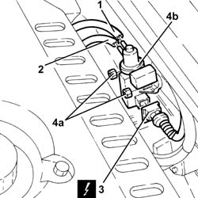
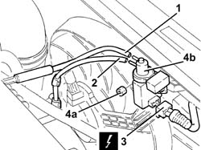
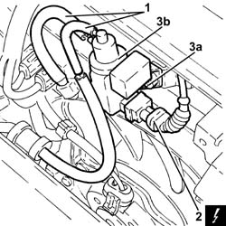

1064B42 solenoid controlling turbocharger vane position actuator r r
- Path
- Procedures > 10 ENGINE > 1064 ENGINE TURBOCHARGING SYSTEM > 1064B control/safety devices > 1064B42 solenoid controlling turbocharger vane position actuator r r
- Kind
- repair procedure (removal / refitting; the operation number is the code)
- Applies to
- engines: 1.9 JTD 8v , 2.4 JTD 10v, 2.4 JTD 20v; all production periods
- Interactive page
- https://sloeber94.github.io/elrnDB-a156/en/#/3237833
Applies to: engines: 1.9 JTD 8v ; all production periods; only with equipment: Euro 3
 Removing
Removing
 Refitting
RefittingEnsure that the ignition key is in the stop OFF, then disconnect the battery negative terminal.
 | Name | Connector |
|---|---|---|
- | Battery |
1. Disconnect the flexible vacuum pipe for the solenoid valve, solenoid valve side.
2. Disconnect the hose controlling the variable geometry turbocharger actuator from the solenoid.
3. Disconnect the electrical connection from the turbocharger vane actuator solenoid.
| Name | Connector |
|---|---|---|
3 | Variable geometry turbine solenoid valve |
4. Undo the nuts (4a) and remove the turbocharger vane position actuator solenoid valve (4b).

Applies to: engines: 1.9 JTD 8v ; all production periods; only with equipment: Euro 3
Refitting
RemovingFit the turbocharger vane actuator solenoid back in its housing and fix it using the nuts.
Connect the electrical connection to the turbocharger vane actuator solenoid.
Connect the hose controlling the variable geometry turbocharger actuator to the solenoid.
Connect the flexible vacuum pipe for the solenoid valve, solenoid valve side.
Connect the battery terminal (-).
Applies to: engines: 2.4 JTD 10v; all production periods; only with equipment: Euro 3
Removing
RefittingEnsure that the ignition key is in the stop OFF, then disconnect the battery negative terminal.
| Name | Connector |
|---|---|---|
- | Battery |
Proceed with the removal 1016A10 sound-proofing cover - r + r .
1. Disconnect the turbocharger vane position actuator solenoid inlet pipe, solenoid valve side.
2. Disconnect the pipe from the solenoid valve to the turbocharger vane position actuator, solenoid valve side.
3. Disconnect the electrical connection from the turbocharger vane actuator solenoid.
| Name | Connector |
|---|---|---|
3 | Variable geometry turbine solenoid valve |
4. Undo the nuts (4a) and remove the turbocharger vane actuator solenoid (4b).

Applies to: engines: 2.4 JTD 10v; all production periods; only with equipment: Euro 3
Refitting
RemovingFit the turbocharger vane actuator solenoid back in its housing and fix it using the nuts.
Connect the electrical connection to the turbocharger vane actuator solenoid.
Connect the pipe from the solenoid valve to the turbocharger vane position actuator, solenoid valve side.
Connect the turbocharger vane position actuator solenoid valve inlet pipe, solenoid valve side.
Proceed with the refitting 1016A10 sound-proofing cover - r + r .
Connect the battery terminal (-).
Applies to: engines: 2.4 JTD 20v; all production periods
Removing
RefittingEnsure that the ignition key is in the OFF position, then disconnect the negative battery terminal (-).
| Name | Connector |
|---|---|---|
- | Battery |
1. Disconnect the vacuum pipes from the solenoid valve for the turbocharger vanes actuator.
2. Disconnect the electrical connection from the turbocharger vane actuator solenoid.
| Name | Connector |
|---|---|---|
2 | Variable geometry turbine solenoid valve |
3. Undo the nuts (3a) and remove the turbocharger vane position actuator solenoid valve (3b).

Applies to: engines: 2.4 JTD 20v; all production periods
Refitting
RemovingFit the turbocharger vane actuator solenoid back in its housing and fix it using the nuts.
Connect the electrical connection to the turbocharger vane actuator solenoid.
Connect the vacuum pipes to the solenoid valve for the turbocharger vanes actuator.
Connect the negative (-) battery terminal.